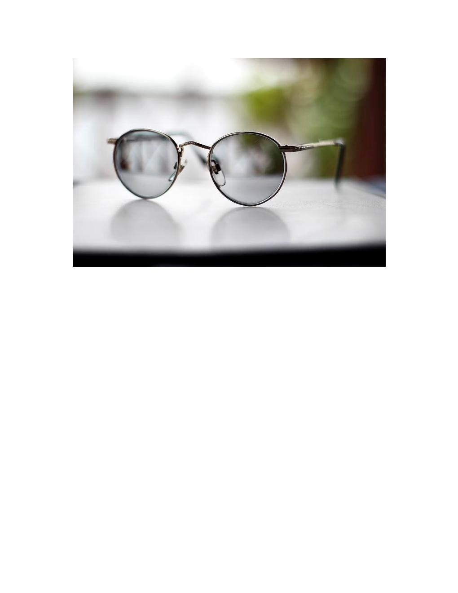
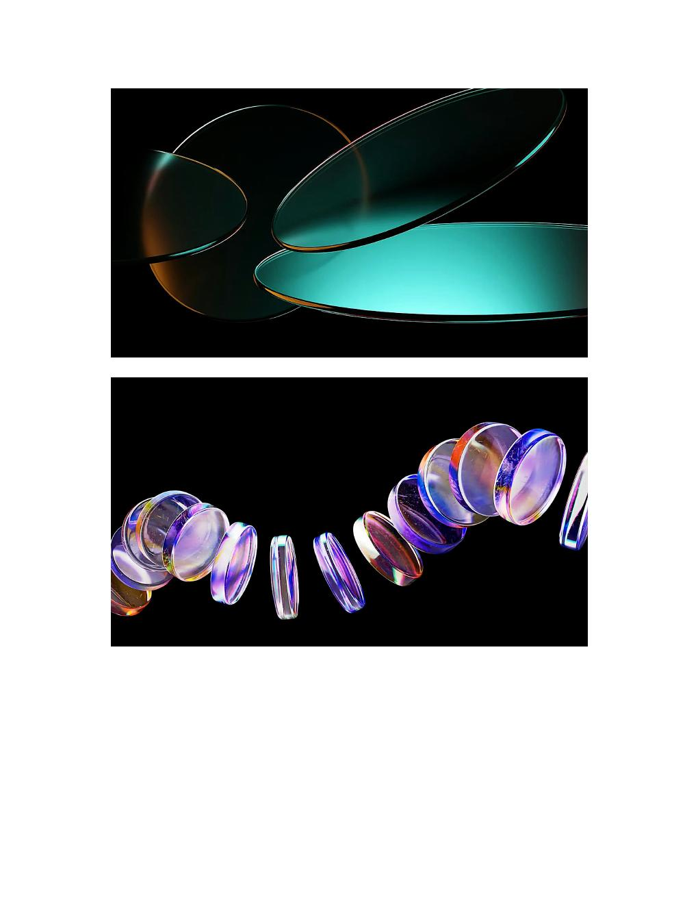
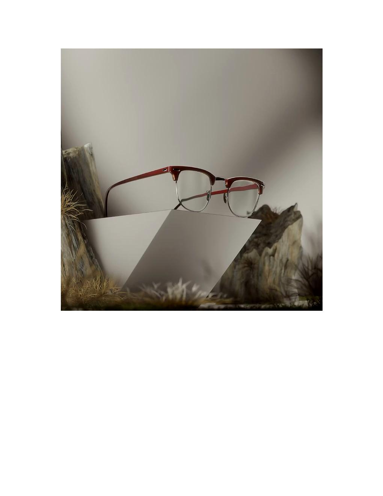
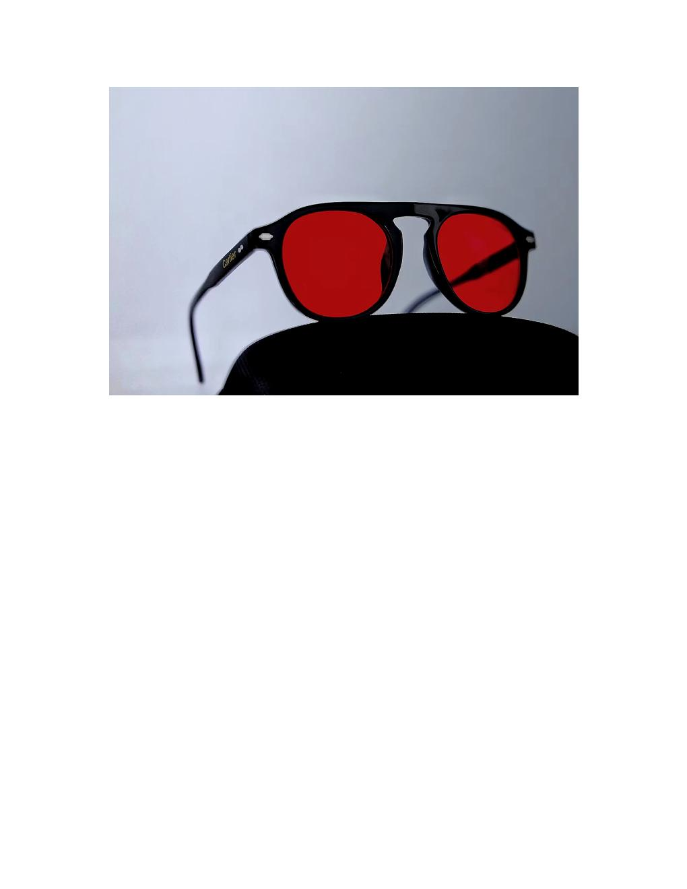
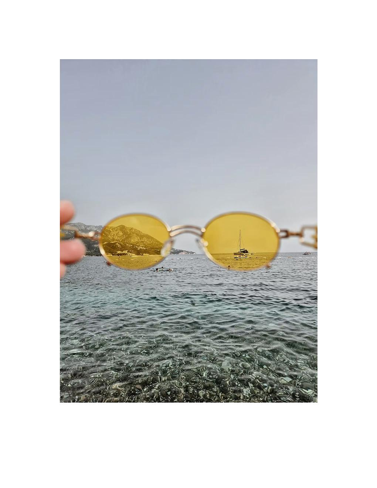
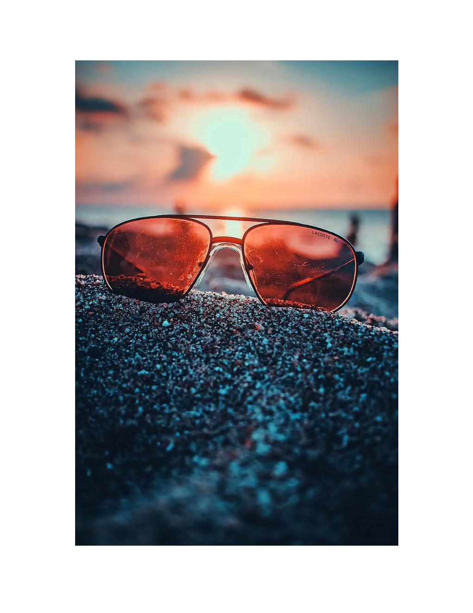

En MENVI creemos que ver bien también significa sentirse cómodo en cada momento del día. Cada filtro está diseñado para proteger, mejorar y adaptar tu visión a las condiciones del entorno.

El filtro fotosensible adapta tus lentes automáticamente según la intensidad de la luz. En interiores permanecen claros y, al exponerse al sol, se oscurecen para brindar mayor comodidad y protección visual frente a los rayos UV.
Es la opción ideal para quienes buscan practicidad, confort y protección en un solo lente, sin necesidad de cambiar entre gafas formuladas y gafas de sol.

Los lentes Transitions® se adaptan inteligentemente a los cambios de luz, oscureciéndose al contacto con el sol y volviendo a su estado claro en interiores. Ofrecen protección contra los rayos UV, mayor confort visual y una experiencia más cómoda durante todo el día.
Además de cuidar tu visión, ayudan a reducir el deslumbramiento y la fatiga visual, combinando tecnología, estilo y practicidad en un solo lente.

Diseñado para ayudar a proteger tus ojos de la exposición prolongada a la luz emitida por pantallas digitales como celulares, computadores y televisores. Contribuye a reducir el cansancio visual, la fatiga ocular y la sensación de ojos secos después de largas jornadas frente a dispositivos.
Ideal para quienes trabajan, estudian o pasan varias horas frente a pantallas.

Diseñado para mejorar el contraste y la percepción visual en determinadas condiciones de luz. Se usa principalmente en ambientes nocturnos o con poca luz, mejorando el contraste en condiciones oscuras — uso militar, aviación, deportes y pantallas antes de dormir.
Ayuda a que los ojos se adapten más rápido al cambio de luz y puede proteger la producción de melatonina al bloquear por completo la luz azul. Una excelente opción para quienes buscan combinar protección, confort visual y personalidad.

Ayuda a mejorar el contraste y la claridad visual, especialmente en ambientes con poca iluminación, neblina o durante la conducción nocturna. Reduce el deslumbramiento causado por luces intensas y brinda una visión más cómoda y descansada.
Mejoran la percepción de profundidad y hacen que los objetos se vean más definidos y nítidos al filtrar parte de la luz azul difusa. Actualmente se recomiendan para conducir.

El punto medio perfecto entre los filtros amarillos y rojos: equilibran protección visual, comodidad y uso diario. Protegen tus ojos de las pantallas al bloquear gran parte de la luz azul, reducen la fatiga visual, sequedad y cansancio ocular.
Además ayudan a que el cuerpo produzca melatonina cuidando tu sueño. Una excelente opción para quienes buscan un estilo moderno y diferente, o para resaltar durante algún evento.
Nuestros especialistas te asesoran sin costo en tu próxima visita.
Consultar por WhatsApp